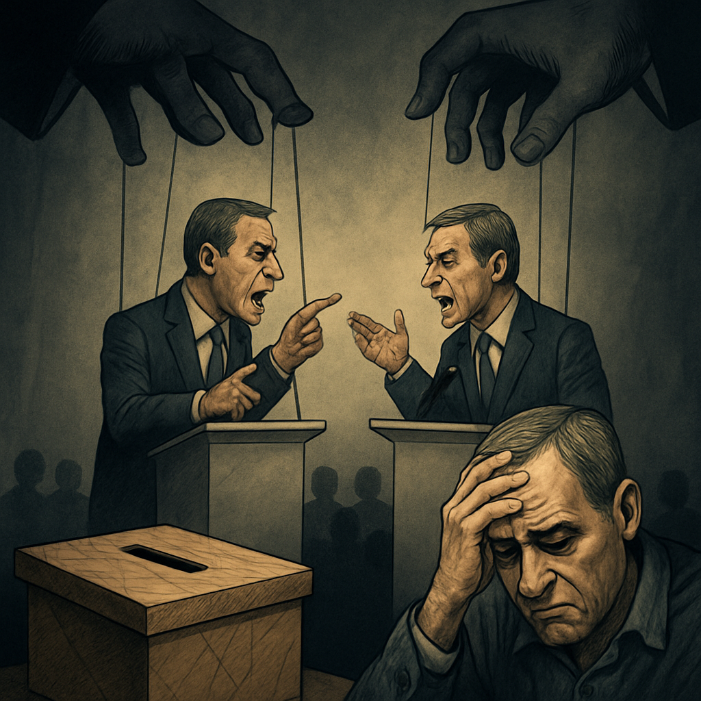

Publicado em 2025-05-01 18:03:05
Portugal parou — ou tentou parar — para assistir ao grande debate entre Luís Montenegro e Pedro Nuno Santos.
Dois homens que aspiram a governar o país.
Dois partidos que se alternam há 51 anos.
Duas promessas que já foram promessas demais.
E o que viu o povo português?
Um duelo de acusações pessoais, contas mal explicadas e negócios encobertos.
Falou-se mais da Spinumviva do que de habitação.
Mais de financiamentos partidários do que de justiça social.
Mais de eles do que de nós.
Enquanto os senhores se engalfinhavam no palco, o país real assistia em silêncio ou simplesmente ignorava.
Os hospitais continuam em rutura.
Os professores abandonam a escola.
Os jovens fogem do país.
Os idosos sobrevivem a recibos da luz e da farmácia.
Mas no debate… nada disso teve lugar.
Não houve país.
Só houve palco.
O debate revelou aquilo que muitos já sabem e outros preferem fingir que não veem:
a política transformou-se num espetáculo autofágico, onde os candidatos não disputam ideias, mas legitimidade moral num sistema imoral por natureza.
Montenegro é interrogado sobre negócios opacos da sua empresa.
Pedro Nuno Santos é confrontado com dossiês do passado e com responsabilidades políticas.
E ambos disparam acusações como se estivessem numa guerra de taberna, não numa luta pelo destino de uma nação.
O povo?
Já não reage.
Já não se indigna.
Já não espera nada — e isso é talvez o maior triunfo da decadência.
Desligar a televisão é o novo voto de protesto.
Desinteressar-se é o novo grito de revolta.
O país ruma novamente a eleições.
Mas o que está em jogo não é a escolha entre visões diferentes de futuro —
é a escolha entre marionetas de um sistema que já não tem soluções para ninguém.
E assim, o povo vota.
Mas vota como quem escolhe o formato da humilhação.
Vota entre o nada e a coisa nenhuma.
Francisco Gonçalves
(Fragmentos do Caos)